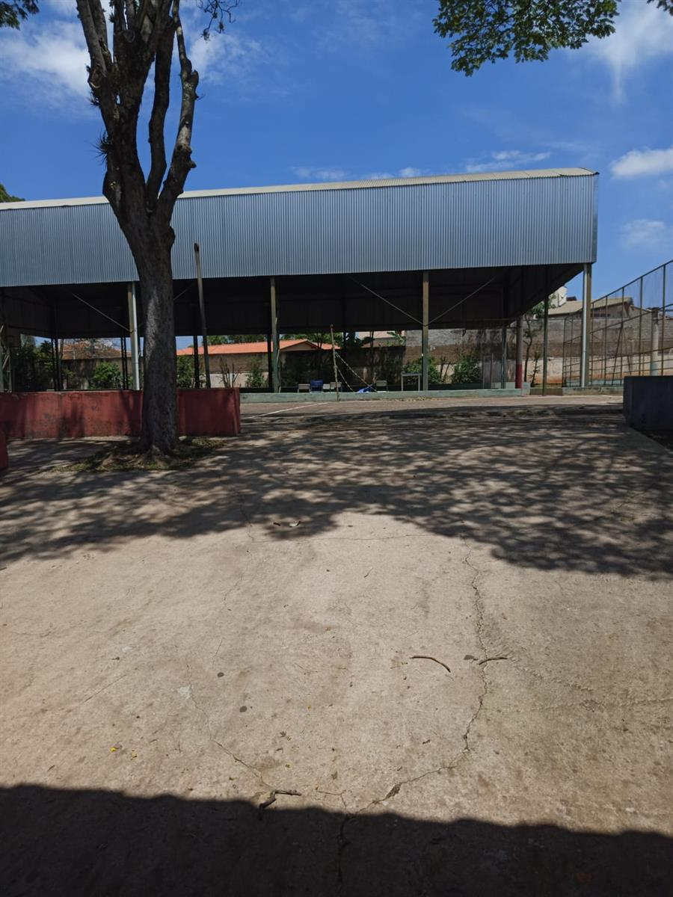

Projeto demonstrativo. Comunicados, agenda e dados escolares só serão publicados após validação da escola.
PAINEL DO ESTUDANTE
Olá, estudante!
Bem-vindo(a) ao espaço da Escola Arthur Da Silva Bernardes Presidente. Selecione uma aba no menu para encontrar o que precisa.

BEM-VINDO AO PORTAL
Informação escolar em um só lugar
Acesse comunicados, agenda, serviços para estudantes e plataformas de aprendizagem pelo menu principal.
Acessar Sala do Futuro ↗MURAL DA ESCOLA
Comunicados
Os avisos aparecerão neste espaço quando forem aprovados pela escola.
ACESSO RÁPIDO
Vida escolar
FIQUE POR DENTRO
Agenda escolar
As datas serão exibidas aqui depois de confirmadas pela equipe escolar.
ESTUDE E APRENDA
Plataformas de aprendizagem
Entre pelo portal oficial. A disponibilidade das plataformas pode variar conforme seu perfil e vínculo escolar.
NOSSA ESCOLA
Conheça a Escola Arthur Da Silva Bernardes Presidente
Escola localizada na Av. Pres. Washington Luíz, 478, em Cerquilho, São Paulo. As demais informações institucionais serão ampliadas após validação da equipe escolar.
Av. Pres. Washington Luíz, 478 · Cerquilho, SP
Telefone e e-mail precisam ser confirmados com a escola antes da publicação.
Consultar Prefeitura de Cerquilho ↗